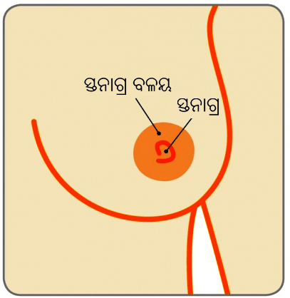
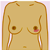

ସ୍ତନ

ଅଧିକାଂଶ ସ୍ତନ ପରିବର୍ତ୍ତନ ଗୁଡିକ ବିନାଇନ୍ ବା ମାରାତ୍ମକ ନଥିବା ସମ୍ଭାବନା ଅଧିକ (ଅଣ-କର୍କଟ)| ଅବଶ୍ୟ, ପରିବର୍ତ୍ତନକୁ ଠିକ୍ ସମୟ ପୁର୍ବରୁ ଜାଣିବା ଓ ତା’ପରେ ସ୍ତନ କର୍କଟର ଚିହ୍ନଟ କଲେ ସଫଳ ଚିକିତ୍ସାର ସର୍ବୋତ୍ତମ ସୁଯୋଗ ପ୍ରାପ୍ତ ହୁଏ, ଯାହାକି ଜଣେ ମହିଳାର ବଞ୍ଚିବାର ସୁଯୋଗକୁ ଉଲ୍ଲେଖନୀୟ ଭାବରେ ଉନ୍ନତ କରିଥାଏ |
ଯଦିଓ ଏହି ସୁଚନାବଳୀ ମୁଖ୍ୟତଃ ମହିଳା ସଶକ୍ତିକରଣର ଲକ୍ଷ୍ୟ ରଖେ, ପୁରୁଷମାନେ ମଧ୍ୟ ସେମାନଙ୍କର ସ୍ତନ ତନ୍ତୁଗୁଡିକରେ କୌଣସି ପରିବର୍ତ୍ତନ ବିଷୟରେ ସଚେତନ ରହିବା ଦରକାର | ଅନେକ ଲୋକମାନେ ଜାଣନ୍ତିନାହିଁ ଯେ, ପୁରୁଷମାନଙ୍କର ମଧ୍ୟ ସ୍ତନ କର୍କଟ ହୋଇପାରେ | ଖୁବ୍ ଅଳ୍ପସଂଖ୍ୟକ ଲୋକଙ୍କର ପ୍ରତ୍ୟେକ ବର୍ଷ ସ୍ତନ କର୍କଟ ହୋଇଥାଏ (ପୁରୁଷ ମାନଙ୍କଠାରେ ସ୍ତନ କର୍କଟ 1% ହୁଏ – ଅର୍ଥାତ୍ 1/100)| .
ସ୍ତନ
ସ୍ତନ ବା ସ୍ତନ୍ୟଗ୍ରନ୍ଥି ରୁପେ ମଧ୍ୟ ଜଣାଶୁଣା, ହେଉଛି ଗ୍ରନ୍ଥିଜନିତ ପ୍ରତ୍ୟଙ୍ଗର ଗୋଟିଏ ଯୋଡ଼, ଯେଉଁଥିରୁ ଶିଶୁଜନ୍ମ ହେବାପରେ ହର୍ମୋନ ପରିବର୍ତ୍ତନ ହେବାରୁ କ୍ଷୀର ଉତ୍ପନ୍ନ ହୁଏ | ସେଗୁଡିକ ମୁଖ୍ୟତଃ ଚର୍ବିଯୁକ୍ତ ତନ୍ତୁଗୁଡିକରେ ତିଆରି ଯାହା ଛାତିର ଉପରିଭାଗରେ ଆରମ୍ଭ ହୁଏ ଏବଂ କାଖର ଠିକ୍ ତଳପର୍ଯ୍ୟନ୍ତ ଆସିଥାଏ | ଏଗୁଡିକ ଲିଗାମେଣ୍ଟ ଏବଂ ବଡ଼ ମାଂସପେଷୀ ଦ୍ୱାରା ସମର୍ଥିତ ହୋଇ ରହିଥାଏ |
ପ୍ରତ୍ୟେକ ସ୍ତନରେ 15-20 ଲୋବ୍ ଗୁଡିକ ରହିଥାଏ ଏବଂ ଫ୍ୟାଟି ଏବଂ ସପୋର୍ଟିଭ୍ ତନ୍ତୁଗୁଡିକ ଦ୍ୱାରା ଚାରିପାଖରୁ ଘେରି ହୋଇଥିବା ଅନେକ ସଂଖ୍ୟକ ଲୋବ୍ୟୁଲ୍ ଏବଂ ଡ଼କ୍ଟ ଥାଏ (ଚିତ୍ର ଦେଖନ୍ତୁ)| ପ୍ରତ୍ୟେକ ଲୋବ୍ୟୁଲ୍ରେ 30 ଟି ମୁଖ୍ୟ ଡ଼କ୍ଟ ବା କ୍ଷୀରବାହୀକା ନଳୀ ଥାଏ ଯେଉଁଗୁଡିକ ସ୍ତନାଗ୍ର ଦିଗକୁ ଖୋଲିହୋଇ ରହିଥାଏ | ସ୍ତନାଗ୍ର ଚାରିପାଖରେ ଥିବା ଗାଢ଼ ଚର୍ମ ଥିବା ଜାଗାକୁ ସ୍ତନାଗ୍ର ବଳୟ ବା ଏରୋଲା କୁହାଯାଏ |
ପ୍ରତ୍ୟେକ କାଖରେ, ପ୍ରାୟତଃ 20-30ଟି ଲିମ୍ଫ୍ ସ୍ଫୀତତନ୍ତୁ (ଗ୍ରନ୍ଥି) ରହିଥାଏ ଯେଉଁଗୁଡିକ ସ୍ତନରୁ ତରଳ ପଦାର୍ଥକୁ ନିର୍ଗତ କରନ୍ତି | ଏହା ଲିମ୍ଫାଟିକ୍ ସିଷ୍ଟମ୍ର ଅଂଶ ସୃଷ୍ଟି କରିଥାଏ ଯାହାକି ଶରୀରକୁ ରୋଗ ବିରୁଦ୍ଧରେ ଲଢ଼ିବାକୁ ସାହାଯ୍ୟ କରିଥାଏ | ସାଧାରଣତଃ ଗୋଟିଏ ସ୍ତନରୁ ଅନ୍ୟଗୋଟିଏ ସ୍ତନ ବଡ଼ ହୋଇଥିବା ହେଉଛି ସ୍ୱାଭାବିକ |
ସ୍ତନାଗ୍ର

ସ୍ତନାଗ୍ର ଗୁଡିକ ସାଧାରଣତଃ ସାମ୍ନାମୁଖୀ ହୋଇଥାଏ, ଯଦିଓ ପ୍ରତ୍ୟେକ ସ୍ତନରେ ସେଗୁଡିକ ଭିନ୍ନ ଦେଖାଯାଇପାରେ | ଗୋଟିଏ କିମ୍ବା ଉଭୟ ସ୍ତନାଗ୍ର ଭିତରକୁ ପଶିଗଲା ଭଳି ଦେଖାଯିବା କିଛି ଅସ୍ୱାଭାବିକ ନୁହେଁ | ଏଗୁଡିକ ଜନ୍ମରୁ ଥାଇପାରେ କିମ୍ବା ସ୍ତନଗୁଡିକର ବିକାଶ ହେବାବେଳେ ହୋଇପାରେ | ସ୍ତନାଗ୍ର କେଶହୀନ ଥାଏ, କିନ୍ତୁ କେତେକ ମହିଳା ମାନଙ୍କର ସ୍ତନାଗ୍ର ବଳୟରେ ଅଳ୍ପ କେତେଗୋଟି କେଶ ଥାଏ |
ଖୁବ୍ ଅଳ୍ପ ସଂଖ୍ୟକ ମହିଳା ମାନଙ୍କର ଅତିରିକ୍ତ ସ୍ତନ ଯୋଡ଼ ଥାଏ, ଯାହା ଆକ୍ସେସୋରି ବ୍ରେଷ୍ଟ ରୁପେ ପରିଚିତ | ଏଗୁଡିକ ସାଧାରଣତଃ କାଖର ତଳପାର୍ଶ୍ୱରେ ରହିଥାଏ | କେତେକ ମହିଳା ମାନଙ୍କର ଅତିରିକ୍ତ ସ୍ତନାଗ୍ର କିମ୍ବା ସ୍ତନାଗ୍ରମାନ ଥାଏ | ଏଗୁଡିକ ସାଧାରଣତଃ ସ୍ତନ ତଳେ କିମ୍ବା ତଳିପେଟ ଉପରେ ଥାଏ | ଆକ୍ସେସୋରି ବ୍ରେଷ୍ଟ ଏବଂ ଅତିରିକ୍ତ ସ୍ତନାଗ୍ର ସାଧାରଣତଃ କିଛି ସମସ୍ୟା ନୁହେଁ ଏବଂ କାଢ଼ିବା ଦରକାର ହୁଏନାହିଁ |.
ଅବସସସରୀ ବ୍ରେଅଷ୍ଟସ ଇଂ ଅର୍ମପିତ

ଯୌନପରିପକ୍ୱତା୍ରୁ ଆରମ୍ଭକରି ଯୁବାବସ୍ଥା ଦେଇ, ଛୁଆଜନ୍ମ କରିବା ସମୟରେ ଏବଂ ତା’ପରେ ଋତୁସ୍ରାବ ବନ୍ଦ ହେବାର (ଜୀବନରେ ପରିବର୍ତ୍ତନ) ଭିନ୍ନଭିନ୍ନ ସମୟରେ ସ୍ତନଗୁଡିକ ମହିଳା ଅଷ୍ଟ୍ରୋଜେନ୍ ହର୍ମୋନ୍ର ବିଭିନ୍ନ ସ୍ତରର ପ୍ରଭାବରୁ କ୍ରମାଗତ ଭାବରେ ପରିବର୍ତ୍ତିତ ହୋଇଚାଲିଛି |
ଅଧିକାଂଶ ଝିଅମାନଙ୍କର 9-11 ବର୍ଷ ବୟସ ପାଖାପାଖି ସ୍ତନର ବିକାଶ ଆରମ୍ଭ ହୋଇଯାଏ, କିନ୍ତୁ ଏହା ପୁର୍ବରୁ ହୋଇପାରେ କିମ୍ବା କିଛିଟା ପରେ ହୋଇପାରେ | ବିଭିନ୍ନ ହାରରେ ସ୍ତନ ବିକଶିତ ହେବା କିଛି ଅସାଧାରଣ ନୁହେଁ | ସ୍ତନ ବିକଶିତ ହେବା ସମୟରେ ସ୍ତନ ଗୁଳା ବା ଆବୁ ହୋଇପାରେ | ଏଗୁଡିକ ସର୍ବଦା ବେନାଇନ୍ ବା ମାରାତ୍ମକ ହୋଇନଥାଏ ଏବଂ ସାଧାରଣତଃ ଥରେ ପରୀକ୍ଷିତ ହେବାପରେ ଚିକିତ୍ସାର ଦରକାର ହୁଏନାହିଁ |
ଯେତେବେଳେ ସ୍ତନଗୁଡିକ ବିକଶିତ ହୁଏ ସେତେବେଳେ ମାସିକ ଋତୁସ୍ରାବ ଚକ୍ର (ସାଇକ୍ଲିକାଲ୍ ସ୍ତନ ପରିବର୍ତ୍ତନ) ସମ୍ପର୍କିତ ପରିବର୍ତ୍ତନ ଗୁଡିକ ସାଧାରଣ | ଠିକ୍ ଗୋଟିଏ ଋତୁସ୍ରାବ ପୁର୍ବରୁ, ସ୍ତନଗୁଡିକ ବଡ଼ ହୋଇପାରେ, ନରମ ଏବଂ ଟିକେ ଫୁଲା ଲାଗିପାରେ | ଋତୁସ୍ରାବ ପରେ, ଏହି ଫୁଲା ବା ଟେଳାଭଳି ଲାଗିବା ଆଉ ଦେଖାଯାଏନାହିଁ କିମ୍ବା ସମ୍ପୁର୍ଣ୍ଣ ଭାବରେ ଚାଲିଯାଇପାରେ (ଯଦିଓ କେତେକ ମହିଳା ମାନଙ୍କ କ୍ଷେତ୍ରରେ ସବୁବେଳେ ନରମ, ଫୁଲାଳିଆ ସ୍ତନ ରହିପାରେ)| ଅନେକ ମହିଳା ମାନଙ୍କର ଋତୁସ୍ରାବ ସମୟରେ ସ୍ତନରେ ବ୍ୟଥା ମଧ୍ୟ ହୋଇଥାଏ (ଋତୁସ୍ରାବଜନିତ ସ୍ତନ ବ୍ୟଥା) | ଅଧିକ ସୁଚନା ପାଇଁ ସ୍ତନ ବ୍ୟଥା ଉପରେ ଥିବା ସୁଚନାକ୍ରମକୁ ଦେଖନ୍ତୁ |
ସମଗ୍ର ଗର୍ଭାବସ୍ଥାରେ ସ୍ତନ୍ୟପାନ କରେଇବାକୁ ସ୍ତନଗୁଡିକ ପ୍ରସ୍ତୁତି କାମରେ ରହି ପରିବର୍ତ୍ତିତ ହୋଇଥାଏ | ପ୍ରଥମେ, ସେଗୁଡିକ ନରମ ଓ ଅଧିକ ସମ୍ବେଦନଶୀଳ ହୁଏ | ସ୍ତନ ଓ ସ୍ତନାଗ୍ର ବଳୟ ବଡ଼ ହେବାକୁ ଲାଗେ (କାରଣ କ୍ଷୀର ଉତ୍ପନ୍ନକାରୀ କୋଷଗୁଡିକର ସଂଖ୍ୟା ବୃଦ୍ଧିପାଏ) ଏବଂ ଚର୍ମ ଉପରେ ଥିବା ରକ୍ତବାହୀ ଧମନୀମାନ ଅଧିକ ଦୃଶ୍ୟମାନ ହୁଏ | ସ୍ତନାଗ୍ର ଗାଢ଼ ହୁଏ ଏବଂ ସମଗ୍ର ଗର୍ଭାବସ୍ଥା ପରେ ସେହିଭଳି ରହିଥାଏ |
ସ୍ତନ୍ୟପାନ କରେଇବା ସମୟରେ, ଅଧିକ ପରିମାଣ କ୍ଷୀର ଉତ୍ପନ୍ନ ହୁଏ ଏବଂ ଦିନ ଭିତରେ ସ୍ତନ ଅନେକ ଥର ବିଭିନ୍ନ ଆକାର ପରିବର୍ତ୍ତନ କରେ | ସ୍ତନ୍ୟପାନ କରେଇବା ବନ୍ଦହେଲେ ସେଗୁଡିକ ଗର୍ଭାବସ୍ଥା ପୁର୍ବରୁ ଯେଭଳି ଥିଲା କ୍ରମଶଃ ସେହିଭଳି ଅବସ୍ଥାକୁ ଫେରିଯାଏ, ଯଦିଓ ସେଗୁଡିକ ଆକାରରେ ଭିନ୍ନ ଏବଂ ଦୃଢ଼ତାରେ କମ୍ ହୋଇଯାଏ |
ବୟସ ସହ ସ୍ତନର ତନ୍ତୁଗୁଡିକ ପରିବର୍ତ୍ତିତ ହୁଏ | ଏହା ନିଜର ଦୃଢ଼ତା ହରେଇବା ଆରମ୍ଭକରେ ଏବଂ କ୍ଷୀର-ଉତ୍ପନ୍ନକାରୀ ତନ୍ତୁଗୁଡିକ ଚର୍ବିଦ୍ୱାରା ପ୍ରତିବଦଳିତ ହୁଏ, ସ୍ତନଗୁଡିକ ଝୁଲିଯାଏ | ଏହା ମେନୋପଜ୍ ବା ଋତୁସ୍ରାବ ବନ୍ଦ ହେବା ପରେ ପରିଲକ୍ଷିତ ହୁଏ ଯେତେବେଳେ ଅଷ୍ଟ୍ରୋଜେନ୍ ସ୍ତର କମିଆସେ ଏବଂ ଋତୁସ୍ରାବ ବନ୍ଦ ହୋଇଯାଏ | ଜଣଙ୍କର ବୟସ ଯେତେବେଳେ ବଢ଼ିଚାଲେ, ସ୍ତନଗୁଡିକର ଆକାର ବଦଳେ | ଯଦି ଏଚ୍ଆର୍ଟି (ହର୍ମୋନ୍ ପ୍ରତିବଦଳକାରୀ ଚିକିତ୍ସା) ନେଉଛନ୍ତି, ତେବେ ସ୍ତଗୁଡିକ ଦୃଢ଼ ଲାଗିପାରେ ଏବଂ ବେଳେବେଳେ ଖୁବ୍ ନରମ ଲାଗିପାରେ |
ଆପଣଙ୍କ ଶରୀରର ଯତ୍ନନେବା ପାଇଁ ସ୍ତନ ସଚେତନତା ହେଉଛି ଏକ ଗୁରୁତ୍ୱପୁର୍ଣ୍ଣ ଅଂଶ | ସ୍ତନ ସଚେତନ ହେବା ଅର୍ଥ ସ୍ତନ ଏବଂ ଆପଣଙ୍କ ସମଗ୍ର ଜୀବନରେ ତାହା କିଭଳି ଭାବରେ ବଦଳୁଛି ସେହି ବିଷୟରେ ଜାଣିବା | ଏହାର ଅର୍ଥ ହେଉଛି ସ୍ୱାଭାବିକ ଭାବରେ ଆପଣଙ୍କର ସ୍ତନ ଗୁଡିକ କିଭଳି ଦେଖାଯାଉଛି ଏବଂ ଅନୁଭବ ହେଉଛି ସେହି ବିଷୟରେ ଜାଣିବା ଯେପରିକି ଆପଣଙ୍କ ପାଇଁ କୌଣସି ଅସ୍ୱାଭାବିକ ପରିବର୍ତ୍ତନ ଲକ୍ଷ୍ୟକଲେ ଆପଣ ସେ ବିଷୟରେ ଆତ୍ମବିଶ୍ୱାସୀ ହେବେ |
ପ୍ରତ୍ୟେକଙ୍କ ସ୍ତନଗୁଡିକ ଦେଖିବାକୁ ଓ ଅନୁଭବ କରିବାକୁ ଭିନ୍ନ ଅଟେ | କେତେକ ବ୍ୟକ୍ତିଙ୍କର ଫୁଲାଳିଆ ସ୍ତନ ଥାଏ, କିମ୍ବା ଗୋଟିଏ ଅନ୍ୟଠାରୁ ଆକାରରେ ବଡ଼, କିମ୍ବା ଯେଉଁ ସ୍ତନଗୁଡିକ ଭିନ୍ନ ଆକାରର | କେତେକଙ୍କର ସ୍ତନାଗ୍ର ଭିତରକୁ ପଶି ରହିଥାଏ, ଯାହାକି ଜନ୍ମରୁ ଥାଇପାରେ କିମ୍ବା ସ୍ତନଗୁଡିକର ବିକାଶ ହେବାବେଳେ ହୋଇପାରେ | ଯେତେବେଳେ ଆପଣ ନିଜର ସ୍ତନଗୁଡିକୁ ଯାଞ୍ଚ କରୁଛନ୍ତି, ଆପଣଙ୍କୁ କିଛି ପରିବର୍ତ୍ତନ ଅନୁଭବ ହେଉଛି କି ସେହିପ୍ରତି ସଚେତନ ରହିବାକୁ ଚେଷ୍ଟାକରନ୍ତୁ |
ସମୟ ସମୟରେ ଆପଣଙ୍କ ସ୍ତନଗୁଡିକୁ ଦେଖନ୍ତୁ ଏବଂ ଅନୁଭବ କରୁଥାଆନ୍ତୁ | ଏହାକୁ କରିବାପାଇଁ ସେଭଳି କିଛି ଧାର୍ଯ୍ୟ ଉପାୟ ନାହିଁ, ଏବଂ ସମାନ ସମୟରେ ଆପଣଙ୍କୁ ଦେଖିବା କିମ୍ବା ଅନୁଭବ କରିବା ଦରକାର ନାହିଁ | କେତେକ ମହିଳାମାନେ ପୋଷାକ ପିନ୍ଧିବା ସମୟରେ କିମ୍ବା ଖୋଲିବା ସମୟରେ, ଗାଧୋଇବା ସମୟରେ କିମ୍ବା ବଡ଼ିଲୋସନ୍ ଲଗେଇବା ବେଳେ ଏହା କରନ୍ତି | କେତେକ ମହିଳା ଦର୍ପଣ ବ୍ୟବହାର କରନ୍ତି; କେତେକ କରନ୍ତିନାହିଁ | ଆପଣ ନିର୍ଣ୍ଣୟ କରିପାରନ୍ତି ଆପଣଙ୍କୁ ଯାହା ଆରାମଦାୟକ ମନେହେଉଛି ଏବଂ ଏହା କେତେବେଳେ ଆପଣଙ୍କ ପାଇଁ ଏହା ସୁବିଧାଜନକ ମନେହେଉଛି | ଗୋଟିଏ ଜିନିଷ ଖୁବ୍ ଗୁରୁତ୍ୱପୁର୍ଣ୍ଣ, ତାହା ହେଉଛି ସ୍ତନର ସମସ୍ତ ଅଂଶକୁ ଅନୁଭବ କରିବା, ଆପଣଙ୍କ ଛାତି ସାମ୍ନାର ଉପରୁ, ତଳ ଏବଂ ଆପଣଙ୍କ କାଖ ଚାରିପାଖରେ ହାତବୁଲେଇ ଦେଖିବା ଓ ଅନୁଭବ କରିବା |.
କିଛି ପରିବର୍ତ୍ତନ ଦେଖିବାକୁ ଆପଣଙ୍କ ସ୍ତନ, ଆପଣଙ୍କ କାଖ ଏବଂ ଆପଣଙ୍କ ଗଳାହାଡ଼ ବା କଲାର୍ବୋନ୍ ପର୍ଯ୍ୟନ୍ତ ସମସ୍ତ ଅଂଶକୁ ଯାଞ୍ଚ କରନ୍ତୁ
ମୁଁ କେଉଁଭଳି ପରିବର୍ତ୍ତନ ବିଷୟରେ ସଚେତନ ହେବା ଉଚିତ୍?
ଆପଣଙ୍କ ପାଇଁ ନୁଆ ଲାଗୁଥିବା କିମ୍ବା ଭିନ୍ନ ମନେହେଉଥିବା ଯେକୌଣସି ପରିବର୍ତ୍ତନ ବିଷୟରେ ଆପଣ ସଚେତନ ହେବା ଦରକାର, ଯେପରିକି:

ସୌଜନ୍ୟତା: ସ୍ତନ କର୍କଟ ଯତ୍ନ, ୟୁକେ

ସୌଜନ୍ୟତା: ସ୍ତନ କର୍କଟ ଯତ୍ନ, ୟୁକେ

ସୌଜନ୍ୟତା: ସ୍ତନ କର୍କଟ ଯତ୍ନ, ୟୁକେ

ସୌଜନ୍ୟତା: ସ୍ତନ କର୍କଟ ଯତ୍ନ, ୟୁକେ

ସୌଜନ୍ୟତା: ସ୍ତନ କର୍କଟ ଯତ୍ନ, ୟୁକେ

ସୌଜନ୍ୟତା: ସ୍ତନ କର୍କଟ ଯତ୍ନ, ୟୁକେ

ସୌଜନ୍ୟତା: ସ୍ତନ କର୍କଟ ଯତ୍ନ, ୟୁକେ

ସୌଜନ୍ୟତା: ସ୍ତନ କର୍କଟ ଯତ୍ନ, ୟୁକେ

ସୌଜନ୍ୟତା: ସ୍ତନ କର୍କଟ ଯତ୍ନ, ୟୁକେ
ସ୍ତନ ସଚେତନତା 5 ପଏଣ୍ଟ ବିଧି